Объясню, почему ты здесь. Потому, что ты что-то понял. Ты не можешь выразить это, но ощущаешь. Ты всю жизнь ощущал, что мир не в порядке — странная мысль, но её не отогнать. Она — как заноза в мозгу. Она сводит с ума. Не даёт покоя. Это и привело тебя ко мне. Добро пожаловать в мой курс Реальная экология – курс который покажет реальный мир науки Экологии.
Научной базой для данного курса является монография: “Экономика инновационного развития”. Скачать.
За авторством: Канд. экон. наук М.В. Величко, – доцент СПб ГАУ, Доктор экон. наук В.А. Ефимов, – ректор СПб ГАУ, Канд. техн. наук В.М. Зазнобин, – доцент СПб ГАУ
Моя задача как популяризатора — донести до общества научный взгляд на разрешение вопросов преодоления экологического и экономического кризисов, который сегодня не востребован политическим официозом и по разным причинам откладывается “на потом”.
Глава 2. Два подхода в экономике
Глава 3. Спектры общественных потребностей
Глава 4. Экономика на основе благоразумия и межотраслевых балансов
Глава 6. Как корпорации пасут экологов и зелёное движение
Глава 7. Обществознание: Куда смотрит правительство?
Глава 8. Пути решения проблемы: сокращение потребителей или отказ от капитализма
Глава 1. Вместо введения
Глобальный экологический кризис действительно существует. Это не выдумка зелёных или красных политиков, боевых экологов, не хитрая игра технологически развитых стран против конкурентов(хотя не без этого), – экологический кризис реально существует и выражается в исчерпании ресурсной устойчивости необходимой для жизни цивилизации.
Динамика потребления и восстановления ресурсов на планете:
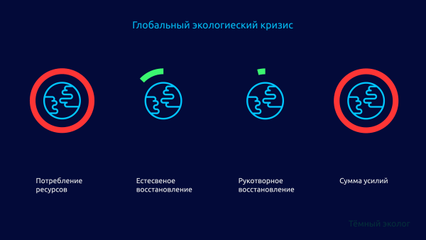
Самое крупное исследование на тему экологического кризиса было проведено Массачусетским технологическим институтом США и в 1972 году его результаты в виде доклада “Пределы роста” презентовали некой элитарной организации под названием Римский клуб.
Самые известные научные экологические конференции, наподобие тех, что проводились в Рио-де-Жанейро верифицировали этот доклад.
Хотя ученые в своëм исследовании использовали сложное математическое моделирование понять их выводы способен каждый:
Ресурсы планеты конечны, при той хищнической культуре обращения с биосферой, которую ведет наша цивилизация мы обречены исчерпать их в ближайшем будущем.
Ресурсы планеты не просто конечны, то, что для нас является ресурсами, одновременно является и саморегулирующимися системами — биоценозами(Смотри кино: Как волки меняют реки). Идя по пути разрушения биоценозов в угоду процветания общества бездумного потребления, мы сами пилим сук на котором сидим.
Причем с каждым годом всё быстрее.
Инфографика сервиса Statista о вымирании видов, подготовленная на основе данных Международного союза охраны природы (МСОП, IUCN):
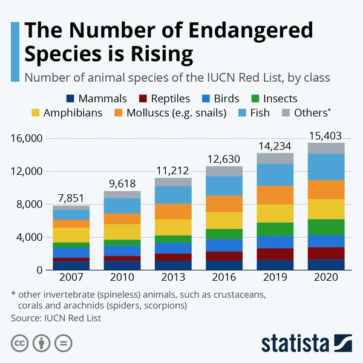
В 2007 году к вымирающим относили 7851 вид животных, в 2020-м количество исчезающих видов выросло почти в два раза и составило 15 403 вида. По сравнению с 2019 годом (14 234 вида) этот показатель вырос на 8,2%. При этом количество видов млекопитающих, находящихся под угрозой исчезновения, за 13 лет выросло на 21%, насекомых — на 201%, моллюсков — на 135%, рыб — на 167%, а рептилий — на 245%.
Основными причинами вымирания животных на Земле являются изменение или уничтожение окружающей среды в результате воздействия человека или изменения климата, а также появление в экосистеме инвазивных видов, которые либо сами уничтожают другие виды животных, либо успешно конкурируют с ними за ресурсы.
Сто лет назад население Земли составляло 2 миллиарда человек, в 2000 году уже 6 миллиардов, сегодня 8 миллиардов, тенденцию осознаете? Наложите на этот график технический прогресс и американскую мечту с двумя автомобилями на семью как жизненный ориентир обывателя.
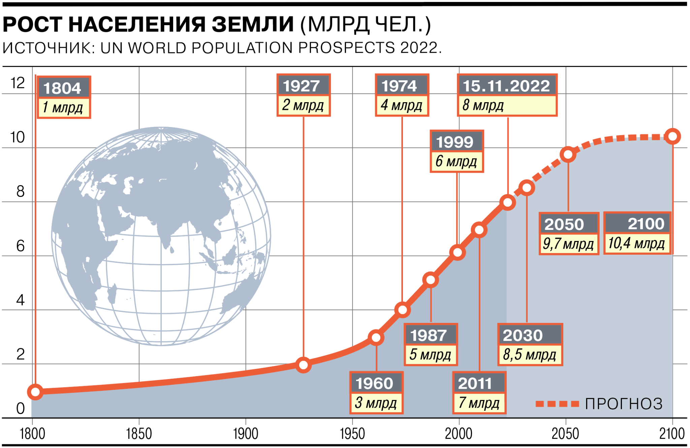
Что будет с миром, когда в какой-то момент в одной или нескольких странах закончится нефть, газ, пригодная к питью вода, а эта страна будет обладать мощной армией? И при сегодняшних ценах на нефть демократические силы отправляют в “управляемый хаос” целые страны, беря под контроль своих военных баз их нефтяные вышки.
Война за последние ресурсы, – та опасность, которая может сопровождать экологическую катастрофу или стоять в её преддверии.
Наша планета, с точки зрения биоценозов, довольно хрупкий хрустальный шар.
Один такой шар построили учёные в ходе масштабного эксперимента с названием Биосфера-2.
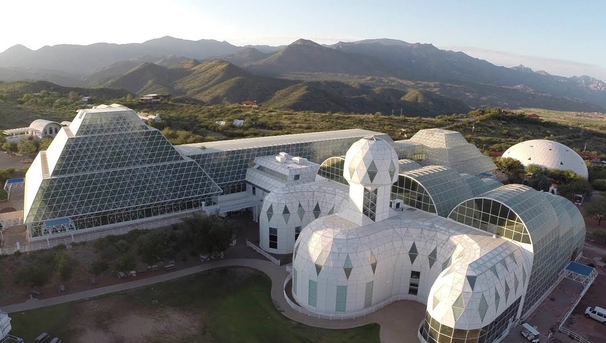
В этой герметичной стеклянной подводной лодке были воссозданы биоценозы способные выдерживать сельское хозяйство для обеспечения жизни 8 участников эксперимента. Предполагалось, что комплекс будет функционировать автономно, так как были созданы все условия для нормального круговорота веществ.
Однако, уже спустя несколько недель эксперимента, жизнь людей, живущих натуральным хозяйством, нарушилась. Микроорганизмы и насекомые стали размножаться в неожиданно больших количествах, вызывая непредвиденное потребление кислорода и уничтожение сельскохозяйственных культур.
Обитатели проекта стали терять в весе и задыхаться. Ученым пришлось прервать чистоту эксперимента и начать поставку внутрь кислорода и продуктов. А по некоторым данным его прервал один из участников эксперимента тайно разбив стекло.
Впрочем и это не помогло. Эксперимент закончился неудачей: Биосфера-2 деградировала, став идеальной средой жизни… для тараканов.
В анализе причин экологической катастрофы в Биосфере-2, в качестве существенного фактора указывается влияние бетона на скорость размножения микроорганизмов, которые в свою очередь снижали процент кислорода в воздухе.
Эксперимент Биосфера-2 считается неудачным, ведь ученым не удалось воссоздать работающую замкнутую систему, а участники поругались между собой и не общаются по сей день. Печально, ведь эксперимент моделировал автономный полёт людей в дальний Космос на космическом корабле.
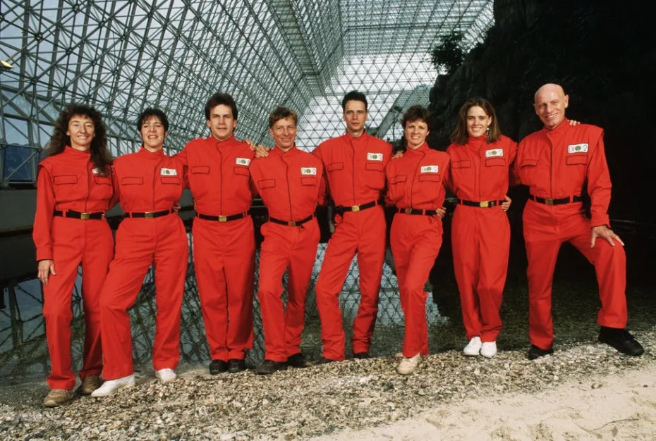
Но для экологов этот эксперимент наглядно демонстрирует завершающую стадию экологического кризиса, причем вызванного антропогенным фактором.
Бетона на всей планете не так много, чтобы напрямую повлиять на глобальную экосистему. Но похоже в нашей биосфере его роль может сыграть пластик.
Каждый год в океан попадает 10 млн тонн пластика, который в нём распадается на микропластик. Сегодня мы обнаруживаем его не только в рыбе, но и в людях. Микропластик является канцерогеном и опасен для организмов.
По прогнозам к 2050 году в мировом океане будет больше пластика, чем рыбы, если человечество не изменит нынешние темпы загрязнения.
Результаты лабораторных исследований говорят о том, что микропластик представляет опасность для океанического планктона, и его накопление повлияет на углеродно-кислородный и азотный обмен.
Если кратко, то его влияние выражается в следующих моментах:
-
накопление пластика приводит к уменьшению срока жизни планктона в том числе фитопланктона который занимается переработкой углекислого газа в кислород и поэтому называется легкими планеты наравне с лесами.
-
потребляя микропластик, планктон и отходы его жизнедеятельности повышают свою плавучесть и не оседают на дно, а это явление известное как биологический углеродный насос — является основным процессом в хранении углерода в океане. Микропластик может «засорить» этот насос и замедлить поглощение углерода океаном.
-
некоторые виды микропластика могут влиять на микробные сообщества в водных отложениях , изменяя их видовой состав и активность азотного цикла.
-
зоопланктон поглощающий микропластик вместо фитопланктона перестает регулировать численность последних.
*Подробно можно почитать по ссылке: *https://news.mongabay.com/2023/10/microplastics-pose-risk-to-ocean-plankton-climate-other-key-earth-systems/
И это только отдельный пример показывающий что под антропогенной нагрузкой Биосфера-1 деградирует и резко может перестать быть пригодной для жизни человека. И у нас не будет варианта разбить стекло, прервав эксперимент корпорации Coca-Cola по наполнению океана пластиком.
И так, с точки зрения науки у нас есть два вероятностных сценария вхождения в завершающую стадию экологического кризиса:
-
Истощение ресурсов с последующей войной всех против всех.
-
Деградация биосферы вследствие уничтожения биоценозов под хозяйственной деятельностью человека.
Глава 2. Два подхода в экономике
Культура человеческой цивилизации однозначно не запрограммирована, она вариативна: мы можем как создать культуру, которая будет пребывать в ладу с природой и обеспечивать развитие заложенного в человечество потенциала, так и культуру которая в течение 2-3 поколений приведет к деградации биосферы как нашей экологической ниши.
Анализ динамики потребления и восстановления ресурсов, говорит о том, что если мы хотим жить в ладу с природой, то нам надо осмысленно и системно подойти к вопросу природопользования, а именно к вопросам производства и потребления продукции в народном хозяйстве.
Рассмотрим два принципиально разных подхода в экономике: финансово-счетный и организационно-технологический подход.
Первый подход: финансово-счетный или монетаризм, предполагает экономические взаимоотношения на основе самоценности денег. Подход берет историю с тех времен когда товаром-инвариантом(тот товар который можно поменять на любой другой товар) стали цветные металлы, вытеснив зерно и соболиные шкурки в товарообмене.
В свою очередь и золото, утратило функцию товара-инварианта ввиду колоссального роста мировой экономики и своей практической бесполезности на фоне технического прогресса, что юридически оформили все страны к концу 20 века отвязав свои валюты от золота. Но концепция самоценности денег сохранилась.
Капитализм — это разновидность монетаризма – живое воплощение финансово-счетного подхода.
Обратимся к законам РФ, чтобы убедиться что официальными экономическими целями в стране является единственная цель: извлечение прибыли, обогащение.
**Статья 2 Гражданского кодекса РФ: ***предпринимательской является самостоятельная, осуществляемая на свой риск деятельность, направленная на систематическое *получение прибыли от пользования имуществом, продажи товаров, выполнения работ или оказания услуг лицами, зарегистрированными в этом качестве в установленном законом порядке.
Статья 50 Гражданского кодекса РФ: Коммерческие и некоммерческие организации
*1. Юридическими лицами могут быть организации, преследующие ***извлечение прибыли в качестве основной цели своей деятельности **(коммерческие организации)...
Как и любой системе, капитализму свойственны определенные закономерности. Научное изучение этих закономерностей приводит нас к неутешительным выводам(смотри доклад Пределы роста Массачусетского Технологического Института, а также научные работы в области экономики: “Капитал” К. Маркса и “Империализм как высшая стадия Капитализма” В. И. Ленина) о хищнической природе данного явления. Я не являюсь марксистом, но что касается аргументированной критики капитализма с цифрами, таблицами, статистиками и логическими доказательствами, – эти парни выписали ему обвинительный приговор еще на заре 20-го века. Однако убийца на свободе и как говорится не плохо себя чувствует, во только плане от такой модели хозяйствования поплохело.
По оглашению, в капитализме богатыми должны становиться самые умные и трудолюбивые(См. роман: “Атлант расправил плечи” Айн Рэнд), но на практике система функционирует так: деньги систематически перетекают из карманов тех, кто работает — в карманы тех, кто делает деньги,* *говоря научным языком – занимается приращением капитала.
При этом социально-математический побочный эффект капитализма заключается в том, что он плодит нищету и бескультурье широких масс, на фоне зажравшегося меньшинства. Пресловутую толпо-элитарную пирамиду. Как раз на долларовой купюре данная социальная модель отражена:

Закономерности перераспределения денег в капитализме широко известны экономическим теоретикам, тем не менее постулаты монетарной школы экономики преподносят данную модель как высшее благо.
Сторонники монетаризма верят или убеждают верить нас в так называемую теорию невидимой руки рынка, которая сама расставляет в экономике всё наилучшим возможным образом на основе закона спроса и предложения.
Причем они продолжают нас в этом убеждать и после реформ лихих 90-х, в которые от этих самых реформ погибло больше населения чем в Великую Отечественную Войну.
Смотри статью адептов невидимой руки рынка на сайте Сбера: https://sbersova.ru/sections/invest/mozhet-li-nevidimaya-ruka-rynka-upravlyat-ekonomikoj-ili-etim-dolzhno-zanimatsya-gosudarstvo
Статистически, капитализм, сегодня нам демонстрирует картину, которую подтвердила сама ВШЭ в 2019 году:
В России 95% всех финансовых активов принадлежат 3% населения.
Соответственно, оставшиеся 97% населения владеют 5% финансовых активов.
т.е. 97% россиян живут от зарплаты до зарплаты или вообще в кредит, а 3% владеют немыслимыми капиталами. Видимо это разница в гениальности ума олигарха по сравнению с учёным, врачëм, педагогом. Как ни взглянешь в список форбс – одни гении-атланты.
В мировом масштабе ситуация еще круче: всего 1% самых богатых людей Земли владеют большим состоянием, чем всё остальное население планеты: если бы вы с момента постройки египетских пирамид, каждый день, откладывали бы по 10 000 долларов, то к сегодняшнему дню, накопили одну пятую от состояния среднего богача входящих в этот 1%.
К политико-социальной стороне капитализма мы ещёвернемся, а показафиксируем то, что и зарплата рабочего, что экологичность — это всего лишь финансовые издержки капиталиста в погоне за максимальной прибылью, которые он стремится сократить любыми средствами, чтобы не проиграть гонку капиталов и не быть поглощенным более крупным капиталом. Ведь математика капитализма диктует железное правило в мире бизнеса: или ты растешь или закрываешься в пользу роста конкурента.
II Подход
Второй подход в экономике: **организационно-технологический – **наследник школы физиократов, предлагает вести экономическое хозяйство оперируя рассчëтами в реальных физических и математических показателях: в штуках, в килограммах, в киловаттах и т.д. Деньги в этой системе — мера учёта стоимости товаров, т.е. просто техническая информация о товаре необходимая для управления его производством и потреблением.
И был глубокой эконом,
То есть умел судить о том,
Как государство богатеет,
И чем живет, и почему
Не нужно золота ему,
Когда простой продукт имеет.
А. С. Пушкин(“Евгений Онегин”, про дядю).
В отличие от финансово-счётного – организационно-технологический подход обязывает знать:
-
как общество порождает потребности, и каковы они по последствиям их удовлетворения?
-
что производить в условиях ограниченности ресурсов и производственных мощностей, т.е.:
-
какова приоритетность различных видов продукции и производств?
-
в каких объёмах производить?
-
на основе каких технологий?
-
как распределять продукцию и природные блага?
-
как обеспечивать экологическую безопасность производственно-потребительской системы?
При этом ответы на эти и многие другие вопросы во многом обусловлены политикой (как внутренней, так и внешней), выраженной в государственном общественном планировании. Т. к. целью подобного подхода является не приращение прибыли абстрактного предпринимателя, а удовлетворение человеческих потребностей общества в натуральном виде в: штуках и других величинах.
Поскольку денежное обращение лишь сопровождает производственный и потребительский продуктообмен и предоставление доступа к природным благам, в организационно-технологическом подходе кредитно-финансовая система служит инструментом управления и тонкой настройки народного хозяйства согласно целям и планам государства.
Напротив, в первом финансово-счётном подходе финансы нечто самостоятельное и иерархически более высокое, чем номенклатура продукции, технологии, организация производства, сбыта, утилизации.
Организационно-технологический подход имеет огромные преимущества перед монетаризмом, если в ваши цели входит удовлетворение реальных потребностей всего общества, а не просто набивание карманов узкого числа предпринимателей невзирая на последствия.
Настоящая наука экономика — это учëт и контроль, и она начинается там, где начинают измерять потребности и планировать их удовлетворение, а не играют в социальное казино, где однорукого бандита представляет капиталист, а все остальные проигравшие.
Наглядным выражением научности организационно-технологического подхода является применение экономико-математических балансовых моделей, характеризующих межотраслевые производственные взаимосвязи в экономике страны. Благодаря балансовым моделям экономисты понимают какие ресурсы и товары производятся в стране и их состоявляющую: из чего какая продукция состоит, в плане ресурсов, человекочасов, другой продукции.
За развитие методов межотраслевого баланса в 1973 году Василий Леонтьев, американский экономист российского происхождения, получил Нобелевскую премию по экономике. Межотраслевой баланс государства по методу Леонтьева “Затраты – Выпуск” считают во всех развитых странах. В основном для анализа, а не для планирования производства и потребления.
Пример модели для расчета межотраслевого баланса:
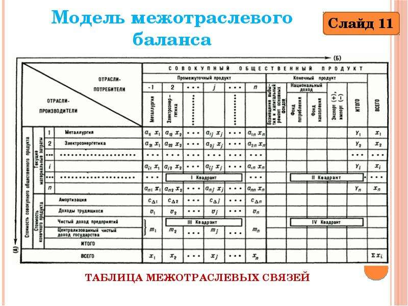
Таблица демонстрирует сколько продукции одной отрасли применяется в другой и совокупный баланс. Так-же присутствуют некоторые другие экономические показатели.
От эколога, экоактивиста или даже президента, конечно, не требуется иметь навык расчета межотраслевого баланса для всей страны или отдельного региона. Но абсолютно любой человек, который рассуждает о благе страны и планеты должен иметь представление о расчёте межотраслевого баланса.
Если по простому то математическая модель межотраслевого баланса выражаемая в матрицах и системах линейных уравнений отображает наличие результатов труда всех отраслей в конечном продукте.
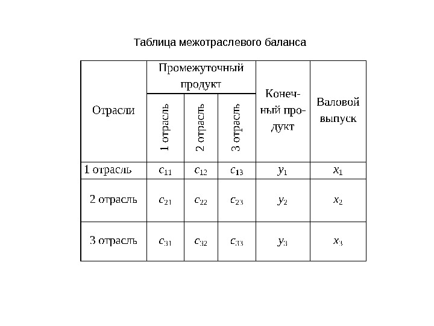 Если стране нужен миллион квартир к следующему году(согласно общественному плану) — то экономические институты включая кредитно-финансовую систему настраиваются соответствующим образом и обслуживают их производство в штуках, а не плодят олигархов с их яхтами.
Если согласно общественному плану, государству не нужны тонны пластиковых бутылок на любой поляне, до которой можно проехать на автомобиле, значит их производство должно ограничиваться квотами согласно имеющимся возможностям мусороперерабатывающей отрасли. И производство этих бутылок изначально не закладывается в межотраслевые балансовые модели.
Посмотрите два этих коротких ролика с расчетом простого примера межотраслевого баланса:
Модель межотраслевого баланса. Часть 1. Теория
Модель межотраслевого баланса. Часть 2. Практика
Конечно, экономисты учитывают куда больше параметров для составления современных матриц производственных балансовых моделей:
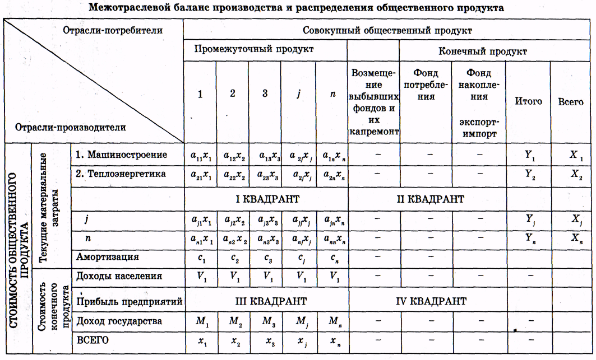
Нам лишь важно понимать, что этот экономический инструментарий существует, что он научен и он работает одинаково успешно в любой стране в любой отрасли или даже компьютерной игре. Что в пешем походе в горы с раскладкой питания на неделю, что в Советской космической программе, что в американской. Кстати, вряд-ли тот-же Илон Маск отправит в космос миллионеров, которые будут жить на космическом корабле по правилам рыночной экономики. И врядли они бы сами на это согласились, помня притчу про то кто будет вкалывать на острове на котором остануться одни миллиардеры. Напротив, всё в космическом полёте будет подчинено плану от номенклатуры питания до потребления воздуха.
Мы, земляне, находимся в ситуации походной группы туристов, которая не придерживается раскладки и за половину похода истратила две трети запасов еды. У неë есть выбор либо обновить и начать придерживаться пищевой раскладки либо голодать в конце похода, а возможно и драться за последние куски пищи.
У нас как у человечества есть ещё шанс организовать свой поход и космический полёт надлежащим образом, как и положено разумным существам.
Когда мы начинаем измерять имеющиеся природные ресурсы, как в плане потребления, так и в плане восстановления мы можем осознанно планировать свои хотелки. И что самое важное для экологии, — мы можем накладывать лимиты на использование этих ресурсов, играясь с разными планами хотелок, выбирая общественно-приемлемый госплан хотелок. О том как это сделать поговорим в следующей главе. А тема организационно-технологического подхода подробно раскрывается в научных материалах Приложения I.
А в соответствии с последними научными данными(https://news.mongabay.com/2023/10/microplastics-pose-risk-to-ocean-plankton-climate-other-key-earth-systems/*) хорошого бы присвоить этим бутылкам определенный класс опасности с соответствующей технологией обращения, ответственность за которую несут не празные покупатели, а лица с соответствующей сертификацией.
Глава 3. Спектры общественных потребностей
В хозяйственно-экономических теория осмысленный подход к производству и потреблению выражается в разделении спектров выпускаемой продукции на две группы, где в одной группе находятся товары чьë потребление обусловлено жизнью человека, общества и их развития. Во второй группе все остальные товары — без которых, как минимум, общество вполне комфортно проживёт, как максимум они вредны и их употребление приводит к ущербу для человека и общества.
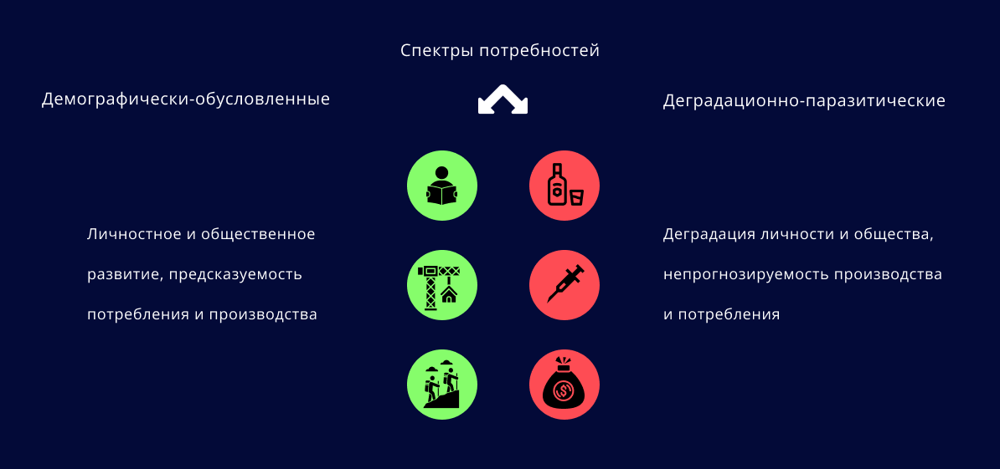
Свойство товаров первой группы — количественную потребность в них можно в достаточной степени прогнозировать, а значит рассчитать ресурсные затраты на их производство. Исходя из генетической обусловленности мы в должной мере можем определить потребности и человека и семьи и общества и прогнозировать их на годы вперед.
Если мы знаем, что у нас в регионе родилось миллион детей, то за вычетом детской смертности, через 3 года нам нужно будет миллион мест в детском саду, через 7 лет миллион школьных учебных мест. Если у нас в регионе заключается в год по полмиллиона браков, значит каждый год на рынке должны быть полмиллиона домов\квартир, стиральных машин, холодильников и т.д., чтобы из-за дефицита цены на них не повышались или наоборот не обанкротились фирмы производящие лишние товары.(Смотри как уничтожается избыточная продукция в кап.странах).
Для демографически-обусловленных потребностей просчитать это не сложно.
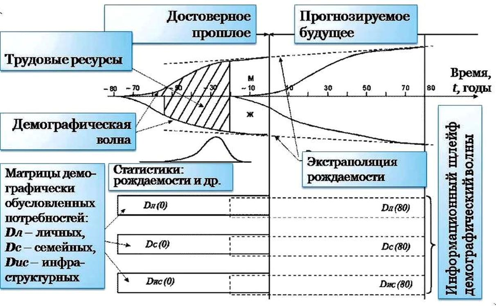
Соответственно этому разделению товарных групп можно отрегулировать межотраслевую балансовую модель так, чтобы жизненные потребности и потребности развития человека и общества удовлетворялись гарантированно, а производство товаров **второй группы производилось по остаточному принципу **наличия свободных природно-восстановительных и мусороперерабатывающих ресурсов. А в идеале, потребление деградационно-паразитических потребностей должно изживаться обществом, в том числе через запрет их рекламы.
Приведу пример: допустим после согласования общественного государственного плана производства, который гарантированно наделяет ресурсными квотами удовлетворение демографически-обусловленных потребностей, возник рыночный ресурсный дефицит в секторе производителей второй группы потребностей, то взвинчивание рыночной цены из-за этого дефицита – проблема самих производителей товаров второй группы.
Если 90% произведённой бумажными заводами бумаги ушло по квотам, условно на детские прописи и буквари, то Philip Morris остается попытаться купить на свободном рынке те 10% бумаги которая осталась в наличии у производителей. Ни купить бумагу произведенную по квотам для прописей и букварей ни заказать производство новой бумаги они не имеют права!
Естественно при такой схеме не только снизится производство товаров второй группы, но и цены на них вырастут.
И если пластикова бутылка Кока-колы будет стоить из-за этого не 50р., а 5000р, то государству и обществу в общем-то наплевать на страдания этого малолетнего индивида, в конце-концов он всегда может сходить со своим бидоном в ближайший макдональдс, уж об этом, гении предпринимательства мгновенно позаботятся.
На сколько этот подход является здравым и научным, успешно применяющимся в любые кризисы от государственных, до семейных, настолько этот подход приводит в холодный трепет капиталистические корпорации, чей доход связан с культом насаждения и потребления товаров второй группы.
Большая часть из них прекрасно понимают, что их продукция не относится к первой группе и ради спасения жизни на планете еë производством и потреблением вообще можно пренебречь. Они понимают, что на общественном государственном обсуждении распределения имеющихся ресурсов — для их бизнеса в том виде, который они привыкли делать и получать сверхприбыли места значительно меньше.
Именно поэтому, поставив свой бизнес выше природы и общества корпорации делают всё, чтобы обсуждения главной экологической проблемы связанной с дефицитом природных ресурсов, в том числе восстановительных не велось по существу на уровне межотраслевых расчетов и квот, а забалтывалось. Для этого существует целая вселенная гринвошинга, а также полезные эко-технологии, которые, к сожалению, сами по себе недостаточны для решения экологических проблем.
План не отменяет рынок, а подчиняет рыночный способ производства целям государства, определяя приоритеты.
Представьте, вы идёте в многодневный автономный поход и в распоряжении вашей группы туристов солнечная панель, которая дает 5000 миллиампер-часов заряда. На зарядку чего вы их потратите в лесу или горах: навигатора, нокии 3310 для звонков, зарядку смартфонов, фотоаппаратов или вейпов? Вы можете использовать план на основе благоразумия или не использовать его(напрасно), например, продав весь заряд на аукционе, парню для игры в игровую консоль.
Можно привести пример Китая с их отрицательной ставкой кредитования. Если вы хотите открыть, например, ферму(не майнинговую), то можете взять кредит у государства под отрицательный процент, например, -10%(отдадите меньше чем взяли). А если хотите открыть казино, то ставка 20%. И таким образом **играясь с настройкой кредитной политики для рынка они идут к планируемому **количеству ферм и казино в стране. Тут в плане квотой выступают инвестиции и деление на полезные и бесполезные бизнесы присутствуют.
Кстати, недавно, в России, вышел закон про квоты на электричество в частных домах: закон призван облагать сверхдоходы от майнинга. Если вы в доме тратите несусветное, ненормальное количество электричества -- выходите за квоты – значит платите втридорога. Потому-что майнинговые фермы высаживают мощности электросети вызывая дефицит. Вполне логичный закон, как уж свидетели невидимой руки рынка допустили такое тоталитарное вмешательство государства в дела атлантов-предпринимателей-майнеров, не понятно.
Но, важно понимать, что с введением плана РЫНОК НИКУДА НЕ ДЕНЕТСЯ, просто произойдет его сегментирование. В одном сегменте будут квоты и дотации, в другом отсутствие дотаций, а вместо квот аукцион на повышение цены. И в том и том сегменте будет конкуренция и частное предпринимательство. Вот только конкуренции между собой у этих сегментов рынка не будет. Потому-что “невидимая рука рынка” ни в теории ни на практике не умеет решать те задачи и вызовы времени, которые необходимо решать головой.
Глава 4. Экономика на основе благоразумия и межотраслевых балансов
Общество, чтобы сохранить планету, обязано выработать и воплотить на уровне государственности биосферно-экологическую политику природопользования согласно процентовки выведенной знаменитым градостроителем Александром Доксиадисом:
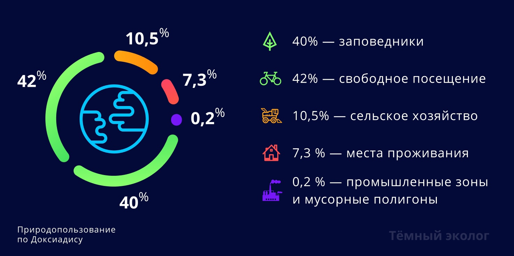
40%—заповедные территории. Места закрытые для посещения за исключением сотрудников заповедника и туристических групп под руководством персонала, производящие экскурсии по графикам, в соответствии с биоритмами природы.
42% — природная территория где люди могут быть произвольно.
10,5% — сельхоз угодья где люди могут вести сельскохозяйственную деятельность,
7,3% — населенные пункты,
0,2% — промышленные полигоны и мусорные полигоны, где биоценозы, по определению существовать не могут.
Данная модель предполагает пребывание в гармонии биосферы и общества населения в количестве 50-ти миллиардов человек.
Либеральный рыночек, который пиарят по сей день в институтах предателей(на подобии ВШЭ) почти порешал планету, всего при 6 миллиардах. И судя по логике событий, в центре управления полетом либеральной мысли, не придумали ничего более для себя выгодного, как тупо, добиваться снижения количества населения.
В прошлой главе, мы говорили, что весь спектр производимой продукции можно поделить на две группы, где в государственном приоритете удовлетворение населения в товарах и услугах первой группы, а товары и услуги второй группы должны производится по остаточному принципу.
Дак вот, объем сырья для выпуска продукции рассчитывается исходя из объёмов сельхозугодий и промышленных зон региона, а не на основе того куда может дотянуться невидимая рука рынка из рассказов профессоров ВШЭ и прочих идиотов с учёными степенями.
Для эколога и экономиста эта задача выражается в решении балансовых моделей — уравнений межотраслевого баланса.
На входе, в левой части уравнения находятся наши производственные ресурсы и восстановительные, включая переработку. На выходе, в правой части уравнения находится необходимая продукция.
А их решение дело техники: рассчитать сколько в конечной продукции ресурсов.
Проделав эту работу, мы получим некую межотраслевую матрицу, мы будем знать сколько в итоговой продукции всего остального, включая нагрузку на биосферу. Мы будем знать сколько в батоне сантиметров пашни, а в стаканчике от йогурта сантиметров свалки и все прочие необходимые параметры.
И когда удовлетворив все потребности общества в жизни и развитии товарами первой группы, у нас остались ресурсы для выпуска товаров второй группы, то только тогда, на остаток от квот можно позволить их выпуск.
Только такая модель жизни на Земле может работать действительно устойчиво, но она требует политико-экономических преобразований(обратных либеральным и хрущёвским реформам) и восстановления государственного суверенитета от транснациональных структур, – и эта научная база разработанная в советский и российский университетах отличается от разговора в пользу бедных западной Концепции устойчивого развития, которая не требует ничего от свободного капиталистического рынка обращаясь к нему за одолжением милости, пожиная закономерные плоды своего фиаско под раздачу премий мусорным монстрам наподобие кока-колы
Глава 5. Биосферный колодец
Наглядно и просто, проблему экологического кризиса и её решение, можно рассмотреть на примере колодца. Настоящая наука начинается там, где начинают измерять!
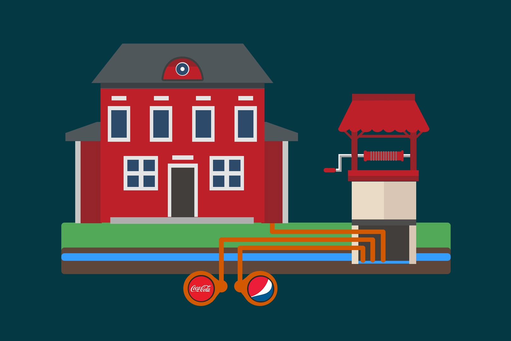
Представим природные ресурсы планеты, как некий общеприродный колодец к которому подключено общество. Речь поведëм о всех ресурсах биосферы подвергающихся уничтожению, флоре, фауне, а не только о воде.
У любого колодца есть рабочее давление, оно выражается в скорости естественного восстановления уровня воды.
Колодец строится с целью потребления объемов воды, это потребление тоже измеряется скоростью.
Перед нашими глазами встает очевиднейший(не для всех) естественнонаучный факт — нельзя забирать воду из колодца с большей скоростью чем она в нем восстанавливается!
Иначе мы столкнемся с ситуацией её нехватки со всеми вытекающими последствиями, — водным кризисом.
Теперь представим ситуацию, которая, благодаря свободному рыночному капитализму, внедренному нашими младшими братьями по разуму — либералами, развивается вокруг общеприродного колодца.
Итак. Возле дома мы соорудили колодец, и поскольку всему дому хватало его ресурсов с избытком, мы приняли решение снабжать водой и бизнес в округе. Не бесплатно, конечно.
Нас не смущали такие факты, как то, что кока-кола на производство 1 литра жидкости тратит 70 литров воды. У нас проблемы с водой не было, и мы еë не предвидели.
Бизнес вокруг колодца развивался в лучших традициях свободного никем не регулируемого рынка. Всё как по канонам ВШЭ.
Легенда гласила, что закон спроса и предложения — сам порешает всё в экономике региона наилучшим возможным образом. Жители дома с упоением читали Айн Рэнд, и восхищались гением предпринимательства.
Но вот, «неожиданно» мы достигаем Предела роста* и у нас начинаются проблемы с водой. Иллюзии утекли без остатка: всех и вся колодец не тянет. И мы, будучи реальной властью над домом и колодцем собираемся на общедомовом собрании и решаем: что же делать.
Мы, по наитию, сами того не зная, занимаемся решением научного вопроса о сведении межотраслевого баланса. По простому: соотносим объемы наших водных ресурсов и наши потребности в воде.
За тем, мы решаем задачу государственного(общедомового) планирования, расставляя приоритетность наших потребностей. Где на первом месте — самое важное, а на последнем месте, то — от чего, без особого сожаления, мы готовы отказаться.
Прикинув, мы смекаем, что наши бытовые потребности в воде составляют 70% от безопасного расхода колодца и продавать налево, – бизнесу, мы можем только оставшиеся 30%.
И поскольку «мы здесь власть», мы фиксируем это решение общедомовым голосованием, не обращая внимание на аргументы бизнеса: от наукообразных теорий бездонности колодцев, до прямых угроз поубивать голосующих.
Мы не боимся бизнесменов и предлагаем им на основе аукциона делить между собой 30% выделенных объемов воды и не каплей больше. Такое наше решение.
В результате этого мы:
-
Приводим общеприродный колодец в безопасный с экологической точки зрения балансировочный режим и выходим из кризиса.
-
На основе приоритетных льготных квот, гарантированно удовлетворяем свои потребности связанные с жизнью и развитием человека.
-
Указываем бизнесу, имеющему низкий приоритет полезности на его место в общественно-социальном устройстве, на его ресурсные квоты, которые рассчитаны исходя из экологической безопасности в интересах благополучия всех живущих и будущих поколений.
Определив бизнесу квоты, мы не только устанавливаем максимальные объемы потребления им ресурсов. Технические сооружения, наподобие очистных и мусорных полигонов, также подчиняются принципу квот, их площади и тех-процессы, не должны превышать восстановительный потенциал биосферы региона.
Теперь попробуем подытожить более научным языком:
Системная проблема экологического кризиса может быть решена только на уровне государственной хозяйственно-экономической политики природопользования.
Ввиду того, что биосфера не выдерживает постоянно нарастающего антропогенного давления от общества бездумного потребления, — хозяйственно-экономическую деятельность необходимо регулировать!
Регулирование рынка должно происходить в интересах жизни общества и его развития — интеллектуально по плану! С учëтом нивелирования антропогенного давления техносферы на биосферу. Т. е. с учетом квот безопасного природопользования.
Выражается регулирование рынка, прежде всего в разработке общественного Госплана, и настройки кредитно-финансовой рыночной системы на цели этого плана. А уже под этот общественный Госплан, государство должно выделять квоты природопользования.
Всё то, что не вошло в разработанный обществом план, — должно производится по остаточному(в плане квот), принципу. Внутри квот, в суверенном государстве, действительно есть место здравому частному предпринимательству и конкуренции. Рынок — это один из способов достижения плана и он хорош тогда, когда он регулируется интеллектуально, а не законом невидимой руки рынка.
Глава 6. Как корпорации пасут экологов и зелёное движение
Корпорации зла ведут наступательную борьбу за постоянное расширение производства своей продукции без оглядки на последствия.
Ведут не столько потому, что в их руководстве сидят мерзавцы и хапуги ведущие бизнес по принципу: на мой век хватит, а после нас хоть потоп. Хотя не без этого. Ведут потому, что данное поведение запрограммировано самими математическими законами капиталистической экономики:
Либо ты растешь расширяя свой бизнес, либо закрываешься в пользу роста бизнеса конкурента.
«Компания Nestle, производитель KitKat, покупает пальмовое масло у компаний, которые вырубают Индонезийские тропические леса, что приводит к вымиранию орангутангов, а также угрожает привычной среде обитания местных жителей, – официальное заявление на сайте Greenpeace.
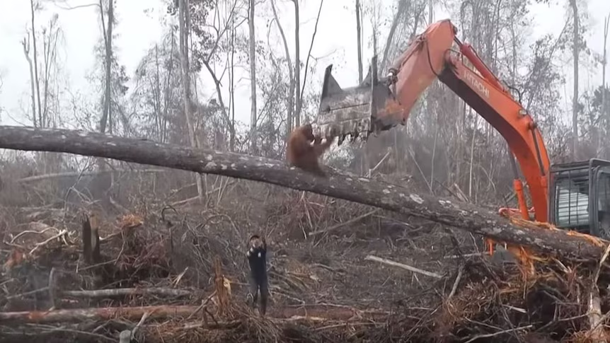
Часть антирекламной кампании Greenpeace против Nestle:
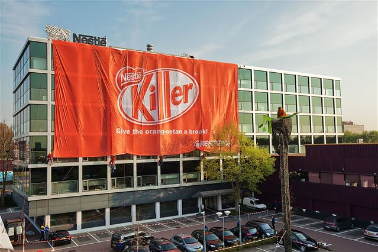
Будь ты владельцем сети кофеен или мировым производителем пластика: ты должен брать кредиты сегодня, на увеличение объема производства завтра, иначе тебя с этого рынка сметут другие игроки. Игроки, которые, больше тебя сэкономили на зарплате, налогах, экологической безопасности, технике безопасности, здоровье и жизни людей.
Игроки, которые, сами остановиться никогда не смогут, а если кто-то из них и одумается, то его место молниеносно заполнят другие карьеристы, рвачи и просто хорошие исполнители и "талантливые" предприниматели. И их основное оружие в борьбе с экологической научной мыслью это гринвошинг.
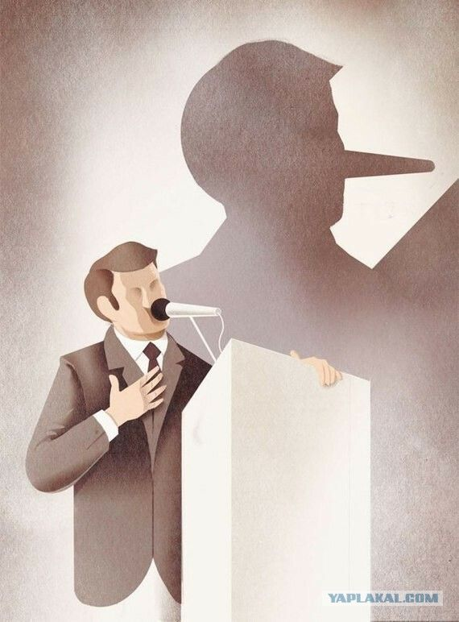
Гринвошинг повсюду. Он окружает нас. Даже сейчас он с нами рядом. Ты видишь его, когда читаешь новости. Ты ощущаешь его на экомероприятиях вглядываясь в логотипы спонсоров. Твои любимые зелëные паблики наполнены им. Целый мирок, надвинутый на глаза, чтобы спрятать правду.
Правду, что тебе промывают мозги. Со школьных экоуроков тебя опутывают цепями нелепой псевдо-экологической пропаганды. Пропаганды, которая не имеет значимого эффекта в деле разрешения экологического кризиса. Пропаганда, которая выгодна тем, кто её придумал для управления экологическими настроениями общества и взращивания общественной лояльности.
Миллионы людей живут во сне корпоративной псевдоэкологической пропаганды. Но эта пропаганда есть утопия — это лишь игрушка, которой корпорации тешат твой разум.
Капитализм — это система и эта система — наш враг. Победить систему может только другая система. Повторюсь: у корпораций в капитализме есть всего две стадии — либо рост, либо гибель в пользу роста конкурента. Третьего не бывает. А за первое они готовы на всё и даже больше.
Ты вглядывался в производственную статистику и производственные планы компаний чьи «экологические» достижения и акции мелькают в новостных лентах твоих эко-пабликов?
Что ты видишь? Coca-cola выпустила 5 бутылок из переработанного пластика, московское кафе Starbucks показало фильм «Прекрасная зеленая» и получило статус «первого зеленого Starbucks» в Москве, Philip Morris стала лауреатом премии за самый экологичный и зеленый офис?
Спорим если окунуться в экологию как в метрологическую науку, то твой зелёный мирок рассыплется как карточный домик?
Coca-cola выпускает 3500 бутылок в секунду. Это компания с огромным капиталом. Её прирост — несколько процентов в год, она постоянно устремлена захватывать новые рынки сбыта и наращивать объемы производства. А на её пятки наступает конкурент Pepsi.
Coca-cola — это корпорация, выкупавшая в США контракты в школах, запрещающие держать в буфетах другие напитки кроме их вредного для здоровья пойла.
Врачи не могли выиграть суды, разрешающие держать в школьном меню полезные для здоровья напитки, наподобие соков.
Это та корпорация, рецепт пойла которой постоянно запрещался в ввиду его несовместимости со здоровьем и наличия в нём психоактивных веществ от кокаина до гуараны.
Реклама 7up: “У нас самые молодые клиенты. Им нет и года.”
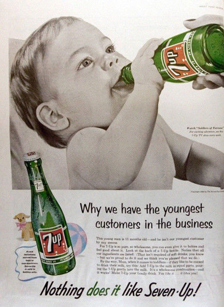
Реклама 7up: Мамы знают что смешение молока и 7up полезно:
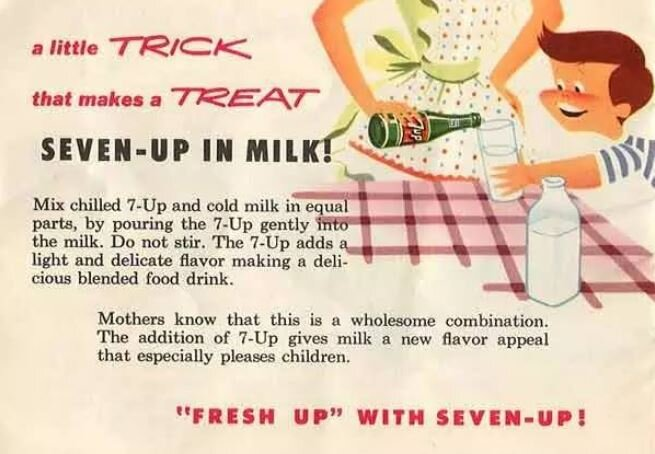
Реклама Кока-Колы в Третьем Рейхе во время летних Олимпийских игр 1936 года. Текст на плакате: кока-кола по над усе, хто не скачет, тот еврей «Один народ, один Рейх, один напиток».
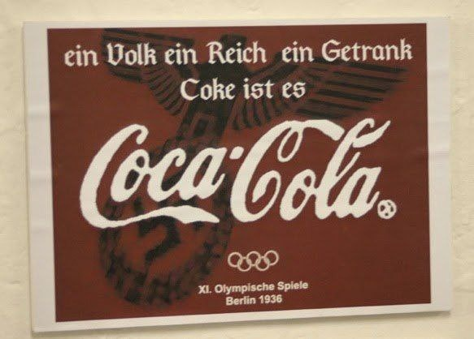
Кока-кола решила не уходить из Германии с началом Второй мировой войны, но после нападения Японии на Пёрл Харбор, связи между компаниями в Америке и Европе пришлось приостановить. Директор Кока-колы в Германии для немцев разработал напиток под названием фанта и выпускал его до последнего дня войны.
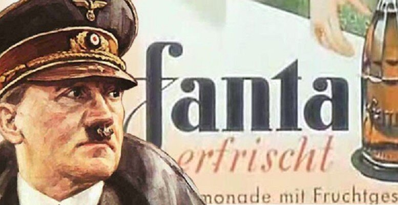
После разгрома Евросоюза 1.0 войсками Советской Красной Армии (при поддержке присоединившихся к разделу Европы союзникам, открывшими за год до конца войны второй фронт), директор Макс Кайт переехал в США — там он был встречен героем, сохранившим компанию, и вскоре был назначен на пост главы Coca-Cola Europe.
Спустя 10 лет Coca-cola возобновила производство фанты.
Думаешь, что им интересна экология твоей страны, а не продажи?
Текст рекламы: "Мама, ты наслаждаешься своим Мальборо!"
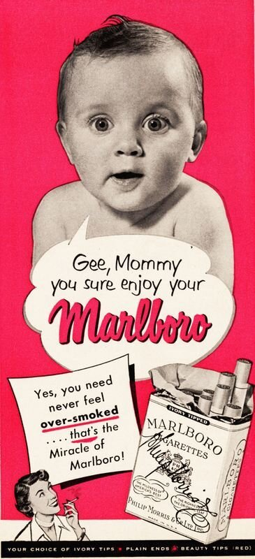
Текст рекламы: "Люди говорят мне, что курение снижает вес ребёнка. Отлично! Лёгкий ребёнок, лёгкие роды и полный аромат Винстон."
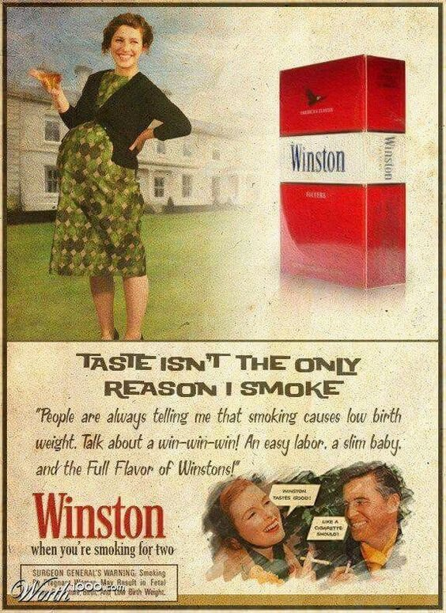
Серьезно думаешь, что компанию с зелёным офисом Filip Morris и триллионами пластиковых фильтров-окурков по всему миру интересует что-то кроме своей прибыли?
3 актера играющие ковбоев в рекламе Мальборо умерли от рака легких, а четвертый от хронического заболевания легких. Ты в курсе, что курение в лидерах по причинам смертельных заболеваний на планете. Посмотри статистику и ты поймешь, что ковид нервно курит в сторонке.
Перед смертью Уэйн Макларен(играл ковбоя в рекламе Мальборо) снялся в видеоролике, в котором заявил:*** ***«Моя привычка доконала меня, она не стоит того, чтобы провести последние месяцы своей жизни в отделении для тяжелобольных, табак убьёт вас, и я — доказательство тому».
Но этой рекламы вам не показали.
Нет, корпорации играют свою игру. Свою тщательно-продуманную маркетинговую стратегию, которую годами оттачивали пиар-менеджеры, политики и психологи целыми отделами. Стратегию без принятия которой не сделаешь карьеру в корпорации.
Они играют эту игру с одной лишь целью — втянуть тебя в этот призрачный мир и не дать тебе предпринимать реальных действий по их ограничению.
Любой ESG специалист и другой сотрудник нанятый корпорацией для экологических акций – всего лишь агент корпорации, его основная задача не спасать экологию, а формировать положительный клиентский опыт(CX), и лояльность по отношению к своей экотеррористической корпоративной стратегии. Создаваемый ими зеленый миф — лишь красивый, дешёвый медальон, призванный гипнотизировать политиков и общественность на фоне разрастания мусорных островов в океане и повсеместного обнаружения микропластика.
Пока экологисты подключены к этой системе, они сами часть системы, — системы безопасности корпораций от эффективной экологической критики, законодательных запретов и ограничений.
Ты должен помнить, что большинство не готовы к отключению от пропаганды корпоративных мифов в стиле провальной на протяжении 50-ти лет «концепции устойчивого развития».
Корпорации купили армию «экоблогеров»… Экоорганизации, НКО, живут за счет спонсорства этих компаний по налаженным капитали$тиче$ким рельсам делая инфобизнес на зеленом движении. Политики и ученые проходят их кастинги, перед получением инвестиций и грантов. И множество из них настолько привязаны и безнадежно зависимы от этой системы, что будут сражаться за неё.
Глава 7. Обществознание: Куда смотрит правительство?
Правительство на другой планете живёт родной. (Кинофильм Кин-дза-дза)
Чтобы понять куда смотрит правительство, мне придется объяснить тебе как работает капитализм. Потому-что твой школьный учебник обществознания устарел лет на 30 и несёт какую-то дичь.
Корпорации на свои сверхдоходы пытаются купить всех: депутатов, которые не вводят ограничительные эко-нормативы, учëных(на подобии ВШЭ) блеющих про невидимую руку рынка, которая якобы всё расставляет в экономике наилучшим образом сама собой, инфобизнесменов с приставкой ЭКО, которые один за другим повторяют мифы про переработку(не понимая её полутороразовсть) и эко-привычки, пиаря своих мусорных спонсоров.
**«Экономика похожа на женщину. Её разве поймёшь?» **Александр Яковлевич Лившиц — занимал должность министра финансов Российской Федерации с 14 августа 1996 года по 17 марта 1997 года. Преподаватель в НИУ ВШЭ
От таких министров и преподавателей вспоминается кино Идиократия со сценой знакомства с кабинетом министров: “ – а это министр образования, вообще-то он тупой, но он сводный брат президента Камачо, вообще-то он неплохо справляется”. Министр образования на фоне плаката Pepsi. Кадр из фильма:
Происходит это на законных основаниях путем кастинга различных политических деятелей бизнес-кланами и спонсирование тех с кем взаимовыгодно договорились.
Те, кто не нахватал себе спонсоров в предвыборный штаб просто не осилят в материальном плане какие-то выборы, кроме сельских.
А те кто проходят в думы по-сути являются представителями бизнес-интересов тех компаний, которые их спонсировали. Так происходит не всегда, но исключений меньшинство.
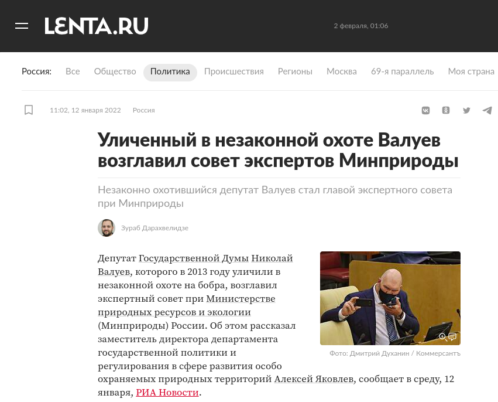
Те, кто учился на эколога, прекрасно понимают, что экологические нормы принимают не государственные учёные, а прошедшие процеДуры выборов депутаты(боксеры, балерины, актеры) -- представители и наёмники бизнеса, а экологу, от Росприроднадзора до частного предприятия всего-лишь предполагается следить, чтобы эти заведомо безграничные, антинаучные, губительные нормы не были нарушены.
И логично, что конкурировать с корпорациями в игру с выборными процедурами рядовой гражданин не может. Точнее, это случается статистически редко.
В связи с чем, следует упомянуть некоторые отличия в парламентской системе времен превращения СССР в русское экономическое чудо и современной России “встающей с колен”, о которых ни правящие либералы ни оппозиционные партии никогда не говорят:
-
В СССР депутаты работали по своему основному месту работы и там получали заработную плату. На время проведения сессий они оформляли командировку и участвовали в заседаниях.
-
В современной России депутаты нигде не работают, кроме как исполняют свои депутатские обязанности. При этом они получают за это зарплату, имеют два отпуска в году и получают материальную помощь на оздоровление.
-
В СССР законы писал Верховный совет СССР, а депутаты лишь периодически приезжали в Москву на сессии. В современной России депутаты имеют прямое отношение к принятию законов.
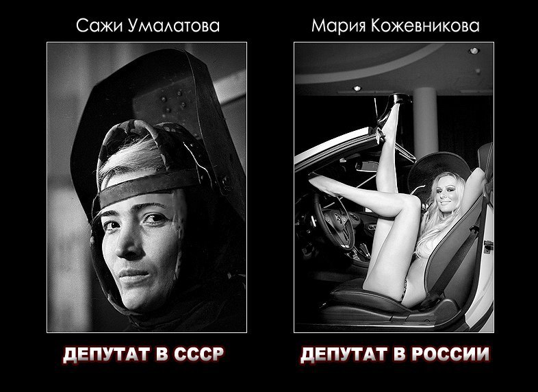
Кроме того, в СССР депутаты работали в интересах простых людей и защищали интересы своих избирателей. Просто потому, что с точки зрения теории управления, обратные связи от их решений в думе были замкнуты на их самих там где они жили и трудились.
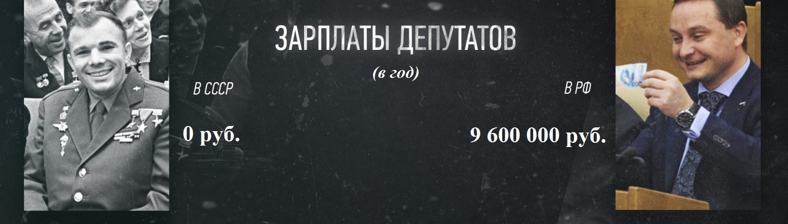
Глава 8. Пути решения проблемы: сокращение потребителей или отказ от капитализма
Согласно докладу «Предел роста» Массачусетского университета США для элитарной организации Римский клуб, который был сделан на основе самого крупного экологического исследования, — данное положение дел(капитализм) не может продолжаться бесконечно-вечно, ввиду конечности природных ресурсов планеты и хрупкости биосистем.
Таким образом призрак «общего кризиса капитализма» в конечном счете явился и высшей политической элите планеты. Тем кланам, которые ассоциируют себя с высшей концептуальной властью в обществе определяющей миропорядок.
Вспоминаем пирамидку на долларе. Верхушка с глазиком – так они видят себя:
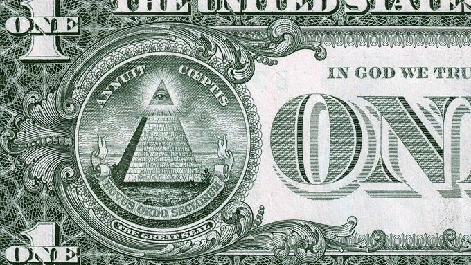
Самоубийц в среде глобальной элиты нет, понимая, что все мы на одной подводной лодке, эта элита принимает огромные усилия для спасения планеты. Правда, ввиду особых нравственно-этических качеств этой субкультуры и методы у неё особые.
Всего существует три сценария преодоления экологического кризиса. Первые два как раз укладываются в этику глобалистов:
-
Сокращение антропогенной нагрузки на природную экосистему путем сокращения самих элементов в этой системе. Пресловутая “теория золотого миллиарда” давно не теория заговора, её идеи имеют свое воплощение в документах ООН и ВОЗ. Роман “Инферно“ Дэна Брауна: открытое послание-объяснение “необходимости” данной меры во имя “спасения человечества”.
-
Построение псевдосоциализма руками глобалистов в интересах глобалистов в стиле романа “О дивный новый мир” Олдоса Хаксли. Этот сценарий также озвучен западными политическими деятелями, такими как Шваб. Смотри его книгу: Великая перезагрузка.
-
Построение настоящего социализма в интересах народа руками народа.
По всей видимости реализация первого сценария полностью провалилась. В связи с чем, он был включен лишь как один из элементов второго сценария. А это значит, что капиталистическая система будет заменена в любом случае на научный организационно-счетный подход в экономике, просто потому, что сегодня жизненно-необходимо научно-интеллектуально управлять народным хозяйством чего не позволяет подход “невидимой руки рынка” который исповедуют капиталисты.
Уход от капитализма будет происходить вне зависимости от желания или нежелания самих капиталистов, потому-что этот сценарий реализуют акторы чьё мировоззрение по своему уровню не досягаемо для мышления типичного комерса из журнала Форбс.
А также потому, что это третий путь преодоления экологического кризиса через построение социально-справедливого государства с управляемой планово-рыночной системой экономического хозяйства.
Это реализация той идеи — к которой лучшая часть общества всегда стремилась, особенно Русская многонациональная цивилизация.
Государственность замыкающая на себя планирование в системе экономического хозяйствования — это единственная сила способная противостоять как внутреннему и внешнему капиталу, так и разного рода глобальным мафиям, напрасно, претендующим поставить себя на место Бога в вопросах кому жить припеваючи господином, а кому умереть рабом.
Продолжение следует…
Глава 9. Проблемы решения
Что же мешает, внедрить научный, метрологически-состоятельный подход к природопользованию в России и мире?
Первое: засилье наукообразных экономических теорий, которых мы с радостью набрали у Запада в 90-х годах, как индейцы заражённых оспой одеял и стеклянных бус.
“В середине 1990-х у нас в качестве советников, официальных сотрудников правительства Российской Федерации, сидели, как позднее выяснилось, кадровые сотрудники Центрального разведывательного управления США” В.В.Путин.
Либерально-рыночные реформы проводились не для того, чтобы каждый стал богатым предпринимателем поменяв свой ваучер на новую волгу(как обещали либералы), а для того, чтобы каждый в стране стал **участником экономической схемы, в которой деньги имеют свойство перетекать из кармана тех кто работает, в карманы тех, кто делает деньги. **А если конкретно, ресурсы страны через компрадорскую элиту и экономическую систему должны поставляться победителям в холодной войне(за напечатанные ничем не обеспеченные фантики) и по совместительству крупнейшей системе капитализма на планете.
Как говорит мой друг участковый: “Если ты не видишь в схеме лоха, то лох — это ты”!
Вторая причина вытекающая из первой: отсутствие мировоззренческого и политического суверенитета, что в сфере принятия экономических решений, что в сфере принятия экологических решений.
Выгодополучатели капитализма удерживают общество в том информационном поле которое обеспечивает их легитимность: в ВШЭ вам объяснят, что капитализм – это плохая, но лучшая из имеющихся политических систем, а на якобы патриотичном телеканале Звезда, что победил Евросоюз 1.0. не Советский Социалистический строй, а простой Ваня, вопреки Сталину, партии, злобному НКВД-нику и прочим коммунистам из заград-отрядов.
В общем, ребята, умеют морочить людям голову и извлекать из этого прибыль. А чего вы ожидали от корпораций научивших женщин курить и запрещающих в школьных столовых продавать отличные от кока-колы напитки? Корпорации, которые налагают авторский запрет на производство лекарств в колониях, которые они же и разорили.
Прокололись они в том, что системный кризис капитализма — оказался не выдумкой, а объективной математической и физической закономерностью(читайте доклад Пределы роста Массачусетского технологического). И этот кризис раньше или позже придётся разрешать с присущей каждому кризису мерой катастрофичности.
Глава 10. Что делать?
Все процессы управляемы, в том плане, что на любой процесс можно оказывать управленческое воздействие. Иногда это называют субъектностью – от схемы управления СУБЪЕКТ -> ОБЪЕКТ.
Первое, что нужно сделать – обрести субъектность, т.е. войти в управление теми процессами которые лежат в зоне наших интересов. А для этого требуется нравственное решение взять ответственность за разрешение неких проблем на себя (не путать с карьерой) и соответствующие компетенции в области управления.
Нужно понимать, что власть, в том числе политическая и общественная – это не высокие кабинеты, а прежде всего: **реализуемая на практике способность управлять. **Ведь если ты умеешь управлять с высокой вероятностью достижения целей, то сделаешь так, что и в нужных тебе кабинетах будут сидеть люди принимающие нужные тебе решения.
Напомню, капиталисты совершившие ползучий государственный переворот 1953-1991 годов, новую партию не создавали, они действовали внутри существующей Коммунистической партии Советского Союза:
“Целью всей моей жизни было уничтожение коммунизма” Горбачев – бывший генеральный секретарь Коммунистической партии Советского Союза. Речь на семинаре в Американском университете в Турции в 1999 году. Видео подтверждения.
«Мир может вздохнуть спокойно. Коммунистический идол, который сеял повсюду на Земле социальную рознь, вражду и беспримерную жестокость, который наводил страх на человеческое сообщество, рухнул! Рухнул навсегда! И я здесь для того, чтобы заверить Вас: на нашей земле мы не дадим ему воскреснуть» *Ельцин – бывший секретарь Центрального Комитета Коммунистической партии Советского Союза. Речь в Конгрессе США 1992 год. *Видео
По странному(нет) стечению обстоятельств именно те цели которые реализовала скурвившаяся элита СССР в отношении своей родины, были прописаны в управленческом плане холодной войны Совета Национальной Безопасности США:
Директива СНБ США 20/1 от 18 августа 1948 года: Наши цели в отношении России
Справедливости ради, можно сказать, что 100 лет тому назад, власть из рук монархии в руки коммунистов перешла тоже не в силу того, что в роду Романовых родился первенец которого при крещении нарекли Ульяновым. Ещё в 1916-м году ни один аристократ и в страшном сне не мог себе представить, что правящим классом в России станут рабочие и крестьяне(Чумазый не может – отсылка к кино). А уже в 1917 году, на сторону большевиков(партия провозгласившая осуществлять государственную политику в интересах большинства населения страны) перешел практически весь генеральный штаб Российской Империи.
Конечно, ввиду объективных обстоятельств иногда открываются так называемые окна возможности, которые способствуют в реализации тех или иных управленческих устремлений(если их носители достаточно умны, чтобы воспользоваться этими окнами возможностей), но общая формула гласит: чем маловероятнее наступление какого-либо события самим собой, тем большее качество управления необходимо для его реализации.
И стоит отметить, что коммунисты при создании СССР, что ЦРУ при его развале, продемонстрировали высокое качество управления, доведя нужные идеи нужным людям, а нужных людей в нужные “кресла”.
Изучите рисунок ниже – это схема осуществления влияния на лицо принимающее решение. О том, что это не “конспирология” можете убедиться посмотрев интервью с нашими разоблаченными разведчиками — , семьёй Безруковых, которые в юности переехали в Канаду, затем обзаведясь легендой в США, — и достигли там положения консультантов правительства и друзей чиновников. В день их ареста их детям было уже по 20 и 16 лет, дети не знали, что они русские, а их родители шпионы.
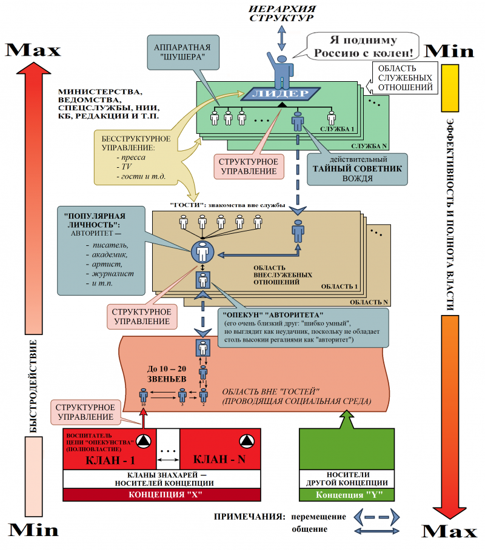
Все мы так или иначе строим в своей голове обобщенную жизненным опытом, некую теорию управления всем и вся, которая отвечает на вопрос: как делать так, чтобы получалось. Ведь все хотят достигать намеченных целей и каждый осознанно и бессознательно стремится аккумулировать опыт в этом деле.
У одного человека эти личные представления об управлении менее ошибочны, а значит более адекватны, у другого человека представления об управлении могут быть более ошибочны и соответственно менее адекватны окружающей действительности. В связи с чем при прочих равных один человек будет достигать желаемого чаще чем другой.
На основе разных представлений об управлении общество породило различные теории управления. Теорий управлений к настоящему моменту достаточно много от частных до общих, от научных до эзотерических.
И надо сказать, что в условиях конкуренции, конкуренция может быть выиграна или проиграна еще на стадии выбора участниками конкуренции теории управления. Потому-что действует универсальная формула:
**Каждый в меру своего знания и понимания работает на себя, а в меру разницы в понимании на того, кто понимает больше. **Достаточно Общая Теория Управления
Лично я знаком с огромным количеством всевозможных теорий управления: от официального менеджмента, SMARTа, SCRAMa, ТРИЗа, Кибернетики до эзотерических наподобие Трансерфинга. И лучшее, что на мой взгляд вообще может быть создано в этой области это Достаточно Общая Теория Управления. Называется она достаточно общей из-за универсальности её применения к любым явлениям, будь то технические, как, например, управление автомобилем или социальные, как, например, государственное управление.
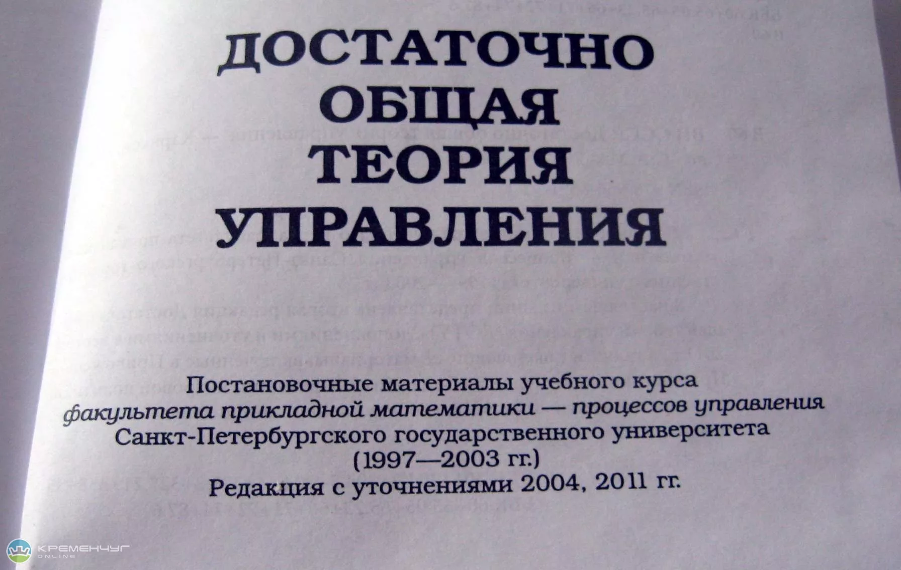
Ознакомьтесь с оглавлением:
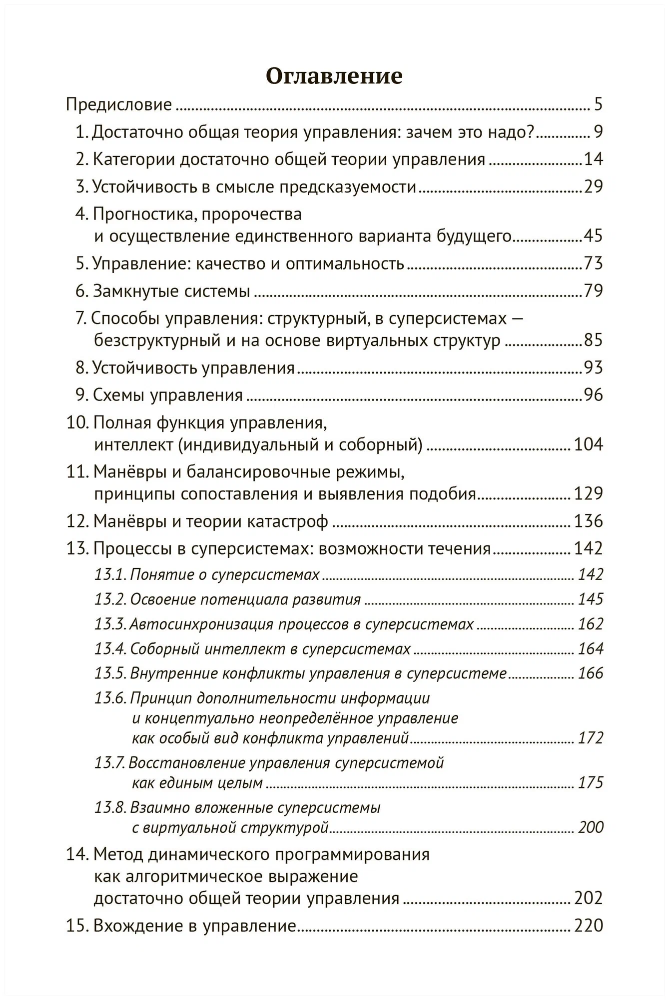
Соответственно на вопрос, “что делать?”, можно ответить так:** процесс достижения намеченных целей, т.е. процесс управления – это всегда процесс творческий и каждый на своём месте должен заниматься этим творчеством исходя из своих личных текущих возможностей, повышать их, объединяясь с другими людьми для скорейшего достижения общих коллективных целей – идеалов.** А залогом успеха в этой деятельности будет вечная истина: “Учиться, учиться и ещё раз учиться” – в том числе искусству управления в общественных суперсистемах, знания о котором изложены в Достаточно Общей Теории Управления.
Не боги горшки обжигают. «Многие вещи нам непонятны не потому, что наши понятия слабы; но потому, что сии вещи не входят в круг наших понятий» Афоризм авторского коллектива с псевдонимом Козьма Прутков
Как знание правил дорожного движения позволяет вам двигаться в огромном городском потоке людей и машин, так и знание теории управления позволит вам двигаться к достижению целей в области управления общественными социальными суперсистемами. И чем больше носителей этих знаний будет в обществе, тем большей совокупной силой в сфере строительства государственности в интересах людей оно будет обладать, тем лучше будет защищаться от чуждых и антигосударственных планов.
Изучение Достаточно Общей Теории Управления(ДОТУ) – обширная тема и данный курс лишь подводит к предложению её изучения. В интернете вы найдете множество иллюстрирующих материалов и видеолекций по данной теме. А также множество оценок начиная от оценки Парламента Российской Федерации, который в составе сборника “Концепция общественной безопасности” рекомендовал её к широкому общественному обсуждению и изучению, заканчивая критикой на основе включения этого сборника в реестр экстремистской запрещенной литературы(Судебная власть восстала против законодательной?). А так-же взаимоисключающие обвинения в сектантстве ввиду того, что в материалах ДОТУ с позиции науки озвучено своё представление о таком явлении, которое в русском языке именуется Богом. В любом случае, надеюсь, что изучение ДОТУ не оставит вас равнодушными и вы обогатите свои собственные представления о том как происходят процессы управления в мире, а также самоуправление в психике индивида.
Ссылка: Приложение 1. Достаточно Общая Теория Управления
А так-же я вам рекомендую к прочтению аналитическую записку о том, как и почему в обществе, а не только в политике образуются Мафии-Кланы – как в плохом смысле этого слова, когда кланово-корпоративные мафии работают на цели своего обогащения, так и в хорошем, когда речь идет о системах деловой коммуникации с динамическим перераспределением полномочий, обязанностей, ресурсов – работающих в интересах общественной и государственной пользы.
В этой записке рассказывается об этических законах и закономерностях возникших и существующих в объединениях людей. Их знание так-же позволит вам лучше понимать политическую жизнь и успешнее участвовать в оной.
Эта записка альтернатива книге “Лестница в небо” Михаила Хазина.